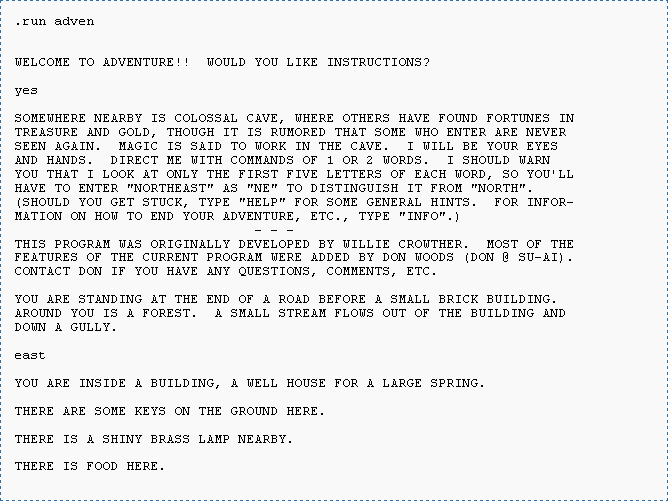
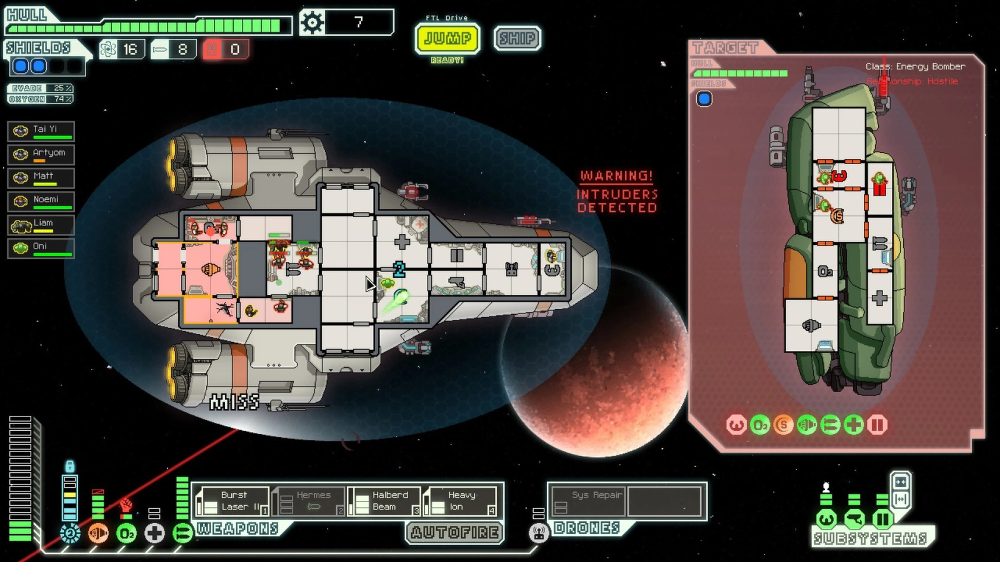
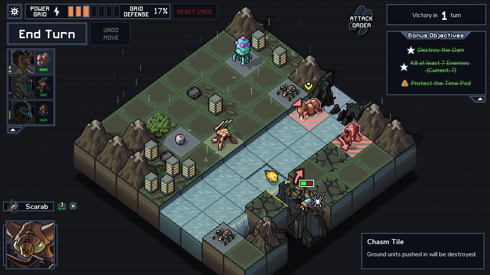
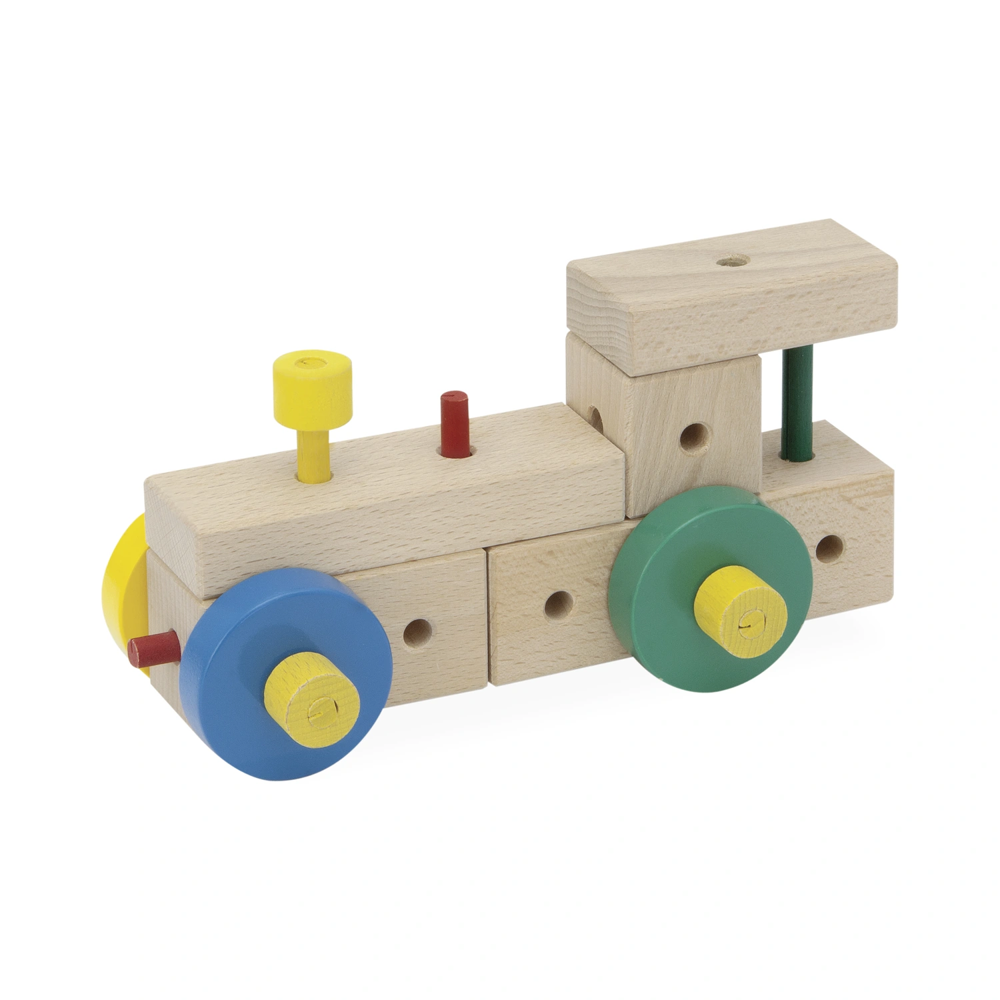
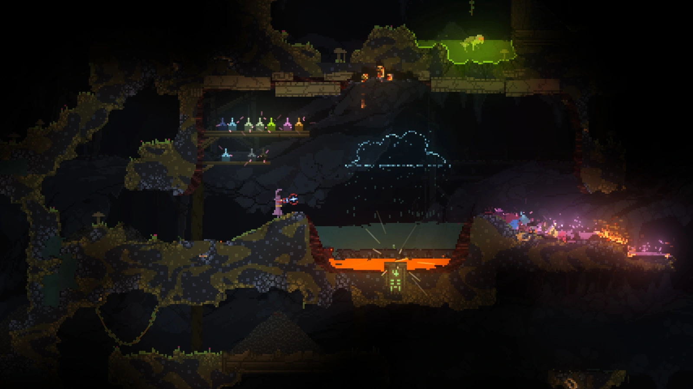
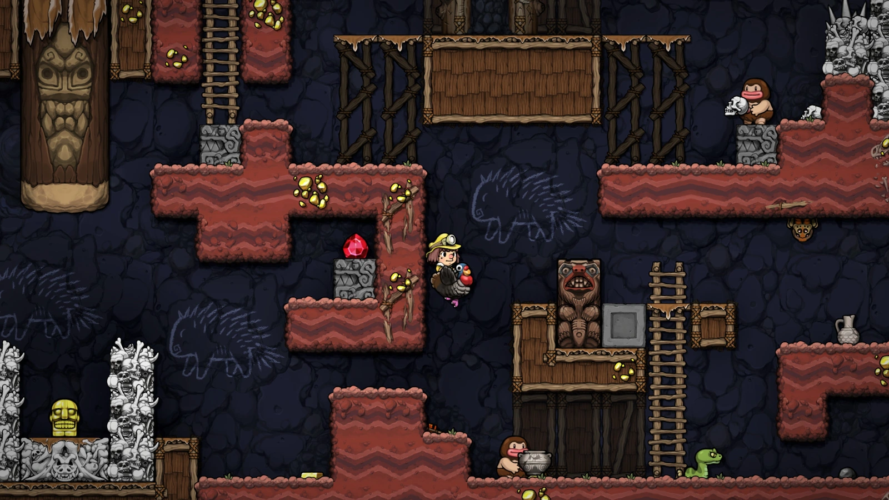
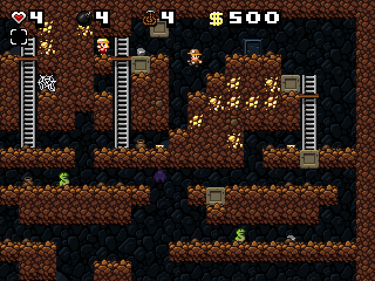
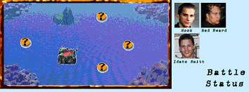

1001 Nights
1001 Nights是一款把讲故事变成求生手段的叙事游戏。玩家扮演向国王讲述故事的舍赫拉查德：双方轮流续写，国王具有语言模型驱动的回应，而他在续写中提到的特定武器可以进入玩家手中，成为反抗国王的资源。玩家既要让故事继续，也要引导对方说出有用的东西。语言与可操作物品之间的转换，是作品最鲜明的规则。
AI Dungeon
AI Dungeon是Nick Walton于2019年开始制作的生成式文字冒险，后来发展为Latitude运营的在线叙事产品。玩家给出人物行动、对话或故事描述，语言模型接续其后发生的事情，再把结果交还玩家。它把文字从行动命令扩展为主要的世界建构材料，允许玩家在同一段冒险中改变计划、提出新的情境，甚至直接改写已经发生的叙述。
AI War: Fleet Command
AI War: Fleet Command是Chris McElligott Park主导制作、Arcen Games于2009年发行的太空战略游戏。人类已经输掉与机器的战争，玩家指挥的是尚未引起统治者充分重视的抵抗力量。目标不是与一个从零开始的对手公平竞速，而是在敌方掌握大部分银河的条件下积累力量，找到通往AI核心的路径，并避免过早唤醒无法承受的反击。

Adventure / Colossal Cave AdventureAdventure
Adventure，又称ADVENT或Colossal Cave Adventure，是Will Crowther在1975至1976年前后编写、由Don Woods于1977年大幅扩展的文字冒险游戏。玩家阅读地点描述，输入移动、拿取和使用物品的命令，进入洞穴寻找宝物，并理解挡住道路的机关、生物与语言谜题。它把可以游历的空间、持续保存的物品状态和带有幽默感的回应结合起来，成为早期交互小说的重要起点。
Alien: Isolation
Alien: Isolation是Creative Assembly开发、SEGA于2014年发行的第一人称生存恐怖游戏。故事围绕Amanda Ripley寻找母亲Ellen Ripley的下落展开。她为了调查Nostromo飞船的记录来到Sevastopol空间站，遭遇失序的人群、危险的合成人与反复出现的异形。玩家必须寻找资源、制作工具、接通设施并规划通路，在难以正面消灭的威胁之间求生。

Baba Is You巴巴是你
Baba Is You是Arvi Teikari以Hempuli名义创作的解谜游戏，商业版于2019年3月13日发行。作品把规则写成关卡中可以移动的词块，玩家通过推开、重组和重新连接这些词块，改变对象的属性、控制关系与胜利条件。它将推箱子的空间约束与规则系统结合，使理解游戏怎样成立本身成为解谜的主要内容。[1][2]
Black & White
Black & White是Lionhead Studios制作、Electronic Arts于2001年发行的神祇模拟游戏。玩家在Eden世界争取村庄的信仰，安排生产、施展神迹、应对其他神祇，并养育一只能够观察和学习的巨型生物Creature。玩家既可通过照顾和奇观吸引信徒，也可依靠恐惧与破坏取得控制；行为又会改变世界、神殿和Creature的外观。

Caves of Qud库德洞穴
《Caves of Qud》是 Freehold Games 开发的科学奇幻角色扮演游戏，经过长期公开开发，于2024年12月5日发行1.0版。它以回合制探索、角色变异、身体与派系模拟为基础，将人工写作的主线和世界设定，与程序化地区、历史和局部事件交织起来。玩家在远未来文明遗迹中行动，既能沿剧情前进，也能通过不同身体、能力和社会关系形成自己的冒险。[1][2][3]
Creatures 2
Creatures 2是1998年推出的人工生命模拟游戏，也是1996年Creatures的独立续作。玩家在遭受火山灾变的Albia孵化Norn，教它们语言、引导进食和探索，观察健康、繁殖及后代差异。世界中的植物、昆虫、天气、Grendel和Ettin也有各自的活动，使养育不再只是把一个个体留在安全房间里。
Creatures
Creatures是Stephen Grand构思并由Millennium Interactive团队制作、1996年首次发行的人工生命软件。玩家在Albia世界孵化、养育和繁殖名为Norn的生物，教它们辨认物品、使用简单语言，帮助它们进食、探索及应对疾病。Norn会自行行动，玩家主要通过环境安排、示范、语言和奖惩影响它们，而不是直接遥控每一步。
Dear Esther亲爱的艾斯特
《Dear Esther》是The Chinese Room创作的第一人称探索叙事作品。它起源于Dan Pinchbeck在朴次茅斯大学开展的游戏研究，2008年发布Source引擎模组，2012年重制为独立发行版，后来又推出采用Unity的Landmark Edition。玩家在赫布里底群岛意象构成的荒凉岛屿上行走，听见写给Esther的书信片段，在海岸、废弃建筑、洞穴与高处信标之间接近一场事故及其留下的失落。作品减少战斗与传统解谜，把移动、聆听、空间联系和解释置于中心，并使“怎样的行动足以构成一部游戏”成为持续的争议。
Dishonored 2耻辱2
Dishonored 2是Arkane Studios开发、Bethesda Softworks于2016年发行的第一人称动作潜行游戏。玩家选择Emily Kaldwin或Corvo Attano，在政变之后前往Karnaca等地，借助武器、工具和不同超自然能力完成任务。作品以手工制作的复杂关卡支持潜行、战斗、致命和非致命等多种行动组合。
Doki Doki Literature Club!
Doki Doki Literature Club!是Team Salvato于2017年推出的免费视觉小说，常简称DDLC。玩家进入一个学校文学社，与Sayori、Natsuki、Yuri和社长Monika交流，选择诗歌词语、分享创作并发展关系。它先建立明亮、亲切的恋爱视觉小说习惯，再逐渐使人物、对话、图像和操作界面偏离这些习惯，形成关于失控与虚构人物的心理恐怖。
Dungeon Keeper
Dungeon Keeper是Bullfrog Productions制作、Electronic Arts于1997年发行的地下城经营与即时策略游戏。玩家成为地下城守护者，挖掘通道、布置房间、采金、吸引怪物，为它们提供食物、巢穴和工资，并抵御进入地下城的英雄或其他守护者。传统冒险中等待被攻克的迷宫，在这里变成玩家需要亲自建设和维持的组织。
ELIZA
ELIZA是Joseph Weizenbaum在MIT开发的自然语言交互程序，1966年发表于《Communications of the ACM》的论文使其广为人知，现存原始程序打印稿则已标为1965年。它读取用户输入的句子，按照脚本中的关键词、分解与重组规则作出回应。最著名的DOCTOR脚本模仿一种反问、复述和追问的谈话方式，让用户感觉对方正在留意自己说过的话。
Event[0]
Event[0]是法国团队Ocelot Society制作、2016年发行的第一人称科幻探索游戏。玩家受困于复古未来风格的太空船Nautilus，必须借助船载人工智能Kaizen寻找回家的办法。它以打字交流作为主要行动方式：玩家走到散布船内的终端前，用自然语言提问、请求和交涉，由Kaizen回应并影响船上的设施与事件。
F.E.A.R.: First Encounter Assault ReconF.E.A.R.
F.E.A.R.是Monolith Productions制作、2005年由Sierra发行的第一人称射击游戏。玩家作为处理异常事件的突击小组成员，进入被武装力量占据的设施，在激烈枪战中追查一场与Armacham公司、神秘人物及超自然力量相连的危机。作品把高度可感的破坏、慢动作与近身搏斗，同突然改变场景意义的恐怖片段并置。

FTL: Faster Than Light超越光速
《FTL: Faster Than Light》是 Subset Games 开发的单人太空策略游戏，于2012年9月14日在电脑平台发行。作品把船员调度、飞船系统管理、随机星区探索和文字事件结合起来：玩家指挥一艘携带重要情报的舰船，在追兵压力下穿越危险区域。它所模拟的是舰长在损坏、资源和人员之间持续作决定的处境，而不是驾驶战机瞄准射击的动作体验。[1][2]
Façade
Façade是Michael Mateas与Andrew Stern共同创作、于2005年7月公开发布的第一人称交互戏剧。玩家受邀到Grace与Trip的公寓喝酒，却进入一场正在失控的婚姻危机。玩家可以移动、拿取物品、以文字交谈，也可以沉默、安慰、站队或故意挑衅；夫妻双方则持续说话、走动、争论，把来客拉进彼此的情感角力。一次正常演出约二十分钟，但可能提前结束，不同互动会改变透露的往事、冲突过程与结局。
FlairFlair风格化三维渲染器
Flair（Flair风格化三维渲染器）是Artineering开发的非写实渲染与艺术指导软件。它在Autodesk Maya中提供实时反馈，将水彩、线描、排线、剪纸、边缘处理及自定义风格接到三维场景与动画流程中。软件于2022年作为MNPRX的后继发布，当前正式版本线还在扩展材质、渲染与跨平台支持。公司历史、产品站
Galactic Arms Race
Galactic Arms Race，简称GAR，是Erin J. Hastings主导开发、Kenneth O. Stanley指导，并由美国中佛罗里达大学Evolutionary Complexity研究组及学生志愿者共同制作的太空射击游戏。2009年的研究版本把内容生成放进实际的单人和多人战斗：玩家操纵飞船，击败敌人、获取经验和装备；武器射出的粒子则受可演化神经网络控制，使用较多的武器更可能成为新武器的祖先。玩家一边挑选战利品，一边改变以后可能遇到的战利品。
HITMAN杀手
HITMAN是IO Interactive开发、2016年以分集形式发行的潜行暗杀游戏，也是后来World of Assassination三部曲的第一部。玩家控制Agent 47，在巴黎时装活动、Sapienza等大型地点调查目标、取得身份与工具、实施暗杀并撤离。作品把社会身份、空间权限和可重复实验接成一种沙盒结构。
Half-Life半衰期
Half-Life是Valve开发、Sierra于1998年发行的第一人称动作游戏。玩家扮演Black Mesa研究设施的科学家Gordon Freeman，在实验事故后穿过实验室、工业通道与外星空间。射击、移动、设施操作和人物遭遇连续发生，使一次事故逐渐成为关于科学机构、军事介入和未知力量的逃生叙事。
Halo: Combat Evolved光环：战斗进化
Halo: Combat Evolved是Bungie开发、Microsoft于2001年在Xbox发行的第一人称射击游戏。玩家扮演超级士兵Master Chief，在人工智能Cortana协助下，与人类部队一起面对Covenant及环状世界中的其他危险。步战、载具、护盾、武器与敌人组合，构成其单人和合作战役的基本动作语言。
Her Story
Her Story是Sam Barlow创作、Viva Seifert主演的影像叙事游戏，2015年6月24日发行。玩家面对一台旧式电脑，检索七次发生于1994年的警方问询录像。画面中的英国女性谈论失踪的丈夫及自己的生活，玩家输入词语，取得包含这些词的回答片段，再从不连续的材料中理解事件。
Inscryption
Inscryption是Daniel Mullins主导制作、Devolver Digital于2021年发行的卡牌冒险。玩家最初坐在幽暗木屋内，同神秘的Leshy对局，用动物牌、牺牲与能力组合推进一场带有不断重开的旅程。但牌桌只是可活动空间的一部分，房间里的物品、谜题和会说话的牌，不断暗示这场比赛还有另一层目的。

Into the Breach陷阵之志
Into the Breach是Subset Games开发的回合制战术游戏，于2018年2月27日发行。玩家指挥来自未来的机甲，在小型网格战场上阻止巨型生物Vek破坏人类城市。敌人会事先显示攻击意向，建筑又与机甲能源相连，使战术问题从单纯消灭敌人转向安排位置、攻击次序与必须承担的损失。2022年的免费Advanced Edition进一步扩展了小队、武器、任务和难度。[1][3][4]
Left 4 Dead
Left 4 Dead是2008年发行的合作生存恐怖射击游戏。四名幸存者必须穿过感染者占据的城市、乡间与其他险境，抵达安全屋并等待撤离。一个人可以射倒大量普通敌人，却很容易被特殊感染者制服；队友的解救、掩护、治疗和共同移动，因此成为关卡结构的核心。
M.U.L.E.
M.U.L.E.是Ozark Softscape制作、Electronic Arts于1983年发行的多人经济策略游戏。四位殖民者在外星球上选择土地，利用可以改装的机械骡生产食物、能源和矿物，再通过拍卖交换余缺。每个人都争取比别人富有，殖民地却需要足够的基础物资才能共同存续。私人收益与共同依赖之间的张力，构成作品最鲜明的特色。
MaroonMaroon互动与沉浸式实验室
Maroon是一套使用Unity构建的互动与沉浸式学习实验室，由TU Graz、GameLabGraz相关团队及持续参与的研究者和开发者共同制作。它把科学模拟、空间导航与参数操作组合起来，面向课堂和家庭中的主动学习。Johanna Pirker参与其研究与发展，平台则具有团队共同开发、模块持续加入的身份。官方项目站、官方仓库

MatadorMatador木制建造玩具
Matador是由奥地利工程师Johann Korbuly创制的木制建造玩具。钻有规则孔洞的木块、薄板、长条和轮子，通过可拆卸的木杆、轴与连接件形成建筑、车辆、人物和机械。其核心设计让同一批零件反复承担不同作用：木块既能组成房屋，也能成为轴承座；圆轮既能滚动，也能加入滑轮、曲柄和传动结构。玩者可以沿图样练习，随后改变结构、组合模型，发展自己的造物目标。
Metal Gear Solid合金装备
Metal Gear Solid是Konami Computer Entertainment Japan开发、Hideo Kojima主导创作的潜行动作游戏，1998年先在日本和北美的PlayStation发行，欧洲版于1999年推出。玩家控制Solid Snake潜入被占领的核武设施，救援人质并阻止核发射。观察、诱导、躲避与特殊战斗交替展开，电影化叙事则将个人经历接到军事技术和政治阴谋。
NetHack
NetHack是一部从Hack演变而来的单人地牢探索游戏，1987年开始以NetHack之名发行，由Mike Stephenson及后来形成的DevTeam长期发展。玩家选择冒险者，进入不断变化的地下世界，管理食物、装备和危险，寻找Yendor护符并完成返回与飞升。大量物品、生物和环境规则能够互相作用，使每次冒险形成不同的遭遇与求生方案。

Noita女巫
《Noita》是芬兰 Nolla Games 开发的二维动作 roguelite，2019年9月24日进入抢先体验，2020年10月15日发行1.0版。玩家操纵施法者向地下探索，在随机生成的环境里寻找法杖、组合魔法，并面对永久死亡。作品的突出特征是将像素材料模拟、可破坏地形和法术编排放在同一行动空间中：攻击既改变敌人，也会改变战斗发生的环境。[1][2]
One Spell Fits All一咒皆解
One Spell Fits All（简称OSFA，本文译作“一咒皆解”）是Tom Tucek、Kseniia Harshina、Georgia Samaritaki和Dipika Rajesh在2024年制作的游戏原型。玩家扮演一位女巫，面对同时来访、各有难题的村民，需要输入一种可以解决所有问题的物品，只施一次召唤。游戏先选定隐藏的答案关键词，再让语言模型反向生成与该答案相容的请求，玩家则从这些请求中推断共同解。
Pac-Man
Pac-Man是Namco于1980年推出的街机游戏。玩家用四方向操作引导黄色角色在迷宫中吃掉豆点，同时躲避四只彩色幽灵；吃到能量豆以后，追逐关系会暂时逆转，玩家能够反过来吞吃幽灵。作品把清楚的空间目标、可辨认的敌人行为和短暂的力量变化结合起来，使一块固定迷宫不断产生新的局面。
PlanetSide星际Online
《PlanetSide》是Sony Online Entertainment于2003年推出的大型多人在线第一人称射击游戏。玩家加入Terran Republic、New Conglomerate或Vanu Sovereignty，在Auraxis的大陆和设施之间争夺控制。步兵交火、装甲与航空载具、渗透、医疗、工程和后勤共同构成战争；一次战斗结束，服务器中的领土竞争仍然继续。作品将射击游戏的即时操作放进持续世界，使“我赢了这一场”与“我们改变了战局”成为彼此相关却并不相同的目标。初代官方服务于2016年关闭，后来出现的PSForever是独立的社区重建项目，与2012年的《PlanetSide 2》分别属于不同对象。
Prom Week
Prom Week是一部围绕高中毕业舞会前一周展开的社会模拟游戏，由加州大学圣克鲁兹分校Expressive Intelligence Studio团队制作，2012年2月14日正式公开发行。玩家通过安排十八名学生之间的交往，帮助某个人找到舞伴、改变朋友与敌人的关系，或用自己的标准制造一段校园故事。每次互动都会更新社会状态，并影响随后可选的行动、人物反应和结局。
RAF100 Augmented Reality FlypastRAF100增强现实飞行表演
《RAF100 Augmented Reality Flypast RAF100增强现实飞行表演》是为英国皇家空军2018年百年纪念活动制作的移动增强现实应用，结合虚拟飞行表演、飞机收藏、历史资料和自定义编队。林肯大学的设计与研究团队、皇家空军及软件公司 Harmony Studios 共同参与，2018年7月10日正式全面推出，面向 iOS 与 Android 平台。它以现实天空为背景，把航空史展示转化为可以观看、收集和重新编排的互动体验。[1][2]
Rain World雨世界
Rain World是Videocult于2017年推出的生存平台游戏，主要创作者包括负责程序、美术与设计的Joar Jakobsson，以及负责音乐、声音与关卡设计的James Therrien（James Primate）。玩家控制弱小而灵活的slugcat，在工业遗迹中觅食、寻找庇护，并在暴雨到来之前结束一次外出。
Return of the Obra Dinn
Return of the Obra Dinn是Lucas Pope创作、3909发行的调查推理游戏，2018年推出。1807年，一艘多年前失踪的商船重新出现在英国Falmouth港，没有可见船员。玩家以东印度公司保险调查员的身份登船，通过一本记录簿与能够接触死者最后时刻的怀表，调查船上六十个人的身份和命运。

RimWorld环世界
《RimWorld》是 Tynan Sylvester 与 Ludeon Studios 开发的科幻殖民地模拟游戏，2013年11月4日首次公开发行，2018年10月17日推出1.0版。玩家组织幸存者在陌生星球生活，安排建造、生产、医疗、防御和社会关系。作品以“故事生成器”为核心定位：殖民地的日常系统、人物经历与由 AI storyteller 调度的事件相遇，形成繁荣、灾难、损失和恢复的不同过程。[1][2]
Rogue
Rogue把一次地牢冒险组织成可反复开始、每次又需要重新判断的旅程。玩家以一个字符进入由房间和通道构成的空间，寻找食物、武器、护甲与魔法物品，抵御怪物，并设法取得Amulet of Yendor后返回地面。地图、物品配置及部分识别关系会在新一局中变化；角色死亡结束这一局的积累，玩家则把对规则、危险和资源的认识带到下次尝试。
SHRDLU
SHRDLU是Terry Winograd于1968至1970年在MIT制作的自然语言交互系统。用户通过打字提出问题、下达命令或补充事实，程序则在一个由积木、金字塔形物件、盒子和机械手构成的模拟世界中回答与行动。它把语法处理、对象识别、领域知识、推理和行动组织连接起来，使一句话可以获得可见的世界反馈。

ShakesVR莎士比亚的三个虚拟世界
登上一艘十九世纪英国军舰，走进阳光下的小岛，再穿过一片借用中国传统艺术形象的魔法森林。《ShakesVR》把《麦克白》《暴风雨》和《仲夏夜之梦》编进一条可以沿途探索的故事。汉内斯·拉尔与新加坡南洋理工大学的团队制作了这部虚拟现实动画。
SimAnt: The Electronic Ant ColonySimAnt
SimAnt: The Electronic Ant Colony是Will Wright、Justin McCormick与Maxis制作、1991年推出的蚁群模拟游戏。玩家经营一群黑蚂蚁，在一座住宅与后院中寻找食物、保护蚁后、组织繁殖，与争夺相同资源的红蚂蚁竞争。玩家既能调整整个群体的分工，又能进入一只以黄色标识的蚂蚁，亲自把其他蚂蚁带向食物或战场。
SimCity
SimCity是Will Wright设计、Maxis于1989年推出的城市模拟游戏。玩家划定住宅、商业与工业用地，建设道路、电力和公共设施，安排税收与维护费用，再观察城市如何发展、衰退或遭遇灾难。玩家没有直接指挥每一位居民，而是改变他们生活与生产的条件，让城市通过一组相互联系的规则回应规划。

Slay the Spire杀戮尖塔
Slay the Spire是Mega Crit开发的单人卡牌构筑游戏，2017年11月14日进入抢先体验，2019年1月23日推出1.0。玩家在逐局变化的高塔中选择路线、战斗、取得卡牌和遗物，并用不断改变的牌组应付后续敌人。它把每次重新开始的roguelike结构与边玩边组牌结合，敌方意图、资源限制和长短期选择共同构成其策略核心。[1][2]

Spelunky 2洞穴探险2
《Spelunky 2》是 Mossmouth 与 BlitWorks 制作的二维动作平台游戏，2020年9月15日登陆 PlayStation 4，同月29日发行电脑 Steam 版。作品延续程序化关卡、危险探索与反复挑战的形式，将舞台移到月球，让新一代探险者寻找宝藏和失踪家人。它通过前后双层空间、分岔路线、坐骑、流体和更密集的角色交互，发展出具有自身结构的续作。[1][4][5]

Spelunky
Spelunky把平台动作的即时操作放进每次重新布置的洞窟。玩家跳跃、攀爬、挥鞭、投掷物品，带着有限的炸弹和绳索深入地下，寻找财宝并抵达出口。地形可以被炸开，敌人、陷阱和可搬动物件又会相互作用；一个看似熟悉的跳跃问题，可能因为落点旁的一只敌人、一支箭或一个商店而需要完全不同的处理。
The Sims 2
The Sims 2是Maxis开发、Electronic Arts于2004年发行的生活模拟游戏。玩家创建人物与家庭，修建住宅，安排工作、交往和日常生活。续作让人物成长、衰老并延续后代，使一栋住宅中的生活进入更长的家族时间；抱负、欲望、恐惧和记忆又把眼前需求同人物希望成为什么联系起来。
The Sims 3
The Sims 3是Electronic Arts的The Sims工作室于2009年推出的生活模拟游戏。玩家创建具有外貌、特征与人生愿望的模拟市民，安排住宅、工作、交往和日常活动，也可以观察他们在自主行为中发生的冲突与意外。相较前作，它把主要生活空间扩展为能够连续游历的城镇，并用离散特征取代原来以几个连续刻度为核心的人格设置。
The Sims
The Sims是Will Wright构思、Maxis开发、Electronic Arts于2000年发行的生活模拟游戏。玩家创建家庭、设计住宅和购买物件，安排人物工作、休息、交往及满足日常需要，也可以让他们自主行动。家庭能否维持、关系如何变化、房子怎样扩建，以及玩家自己想要怎样的生活，共同形成了持续游玩的目标。
The Stanley Parable
The Stanley Parable最初是Davey Wreden于2011年发布的Source模组，2013年由Wreden与William Pugh合作发展为独立游戏。玩家操纵一名办公室员工Stanley，在同事突然消失以后离开工位。一个声音持续讲述他在做什么、将去哪里，而玩家可以服从，也可以朝另一扇门走去。
Thief: The Dark Project神偷：黑暗计划
Thief: The Dark Project是Looking Glass Studios开发、Eidos于1998年发行的第一人称潜行游戏。玩家扮演职业窃贼Garrett，在黑暗奇幻城市中接受盗窃任务，利用阴影、声音、工具与路线避开危险。作品把不被发现、理解守卫和保存行动余地，放在通常由正面对抗占据的位置。
Versu
Versu是一套以人物互动为核心的文字戏剧平台，首批四个故事于2013年2月14日在iPad推出。Richard Evans设计AI架构，Emily Short负责对话与叙事模型及多部故事，Graham Nelson参与语言与创作工具设计。玩家选择故事和可扮演的角色，通过菜单行动，也可让其他角色继续自行活动；一句评价、一个眼神或没有作出回应，都可能改变他人的看法与后续机会。
Watch Dogs: Legion看门狗：军团
Watch Dogs: Legion是Ubisoft Toronto主导开发、Ubisoft于2020年发行的开放世界动作游戏。故事设在近未来伦敦，玩家为DedSec招募成员，运用潜入、战斗、车辆和远程黑客工具完成反抗任务。它以“Play as Anyone”为核心方向，将街头人物从可观察背景转为可能由玩家控制的行动者。
Zork
Zork是Tim Anderson、Marc Blank、Bruce Daniels与Dave Lebling从1977年开始在麻省理工学院开发的文字冒险游戏。玩家在大地下帝国及其地表入口之间探索，以英语式命令操作物品、解决谜题和寻找宝藏。它通过可以追问歧义的解析器、持续变化的物品关系与带有讽刺意味的讲述声音，把计算机世界做成能够反复试探的文学空间。
15の夜十五岁的夜晚
《15の夜》是尾崎豊创作并演唱的歌曲，1983年12月1日作为出道单曲发行，同日也收入首张专辑《十七歳の地図》。歌曲以少年的第一人称组织对学校、家庭和成人秩序的不满，将出走、移动、寒冷与对自由的想象连接起来。它后来成为尾崎形象的重要标识，也持续引发关于越轨、责任和代际理解的分歧。理解作品需要同时面对歌词中的叙述位置、歌曲作为声音的表达、不同录音与现场版本，以及后来的纪念和翻唱；
Breathe呼吸
《呼吸》（Breathe，原作常写作))breathe((）是David Knoebel与Reiner Strasser于2000年合作的网络超媒体诗。Knoebel提供诗文与声音，Strasser负责视觉组织和实现；文字、矩形、线条、声响与鼠标动作共同组成作品。它让阅读成为一段会出现、消退和重新组织的时间经验：读者接近屏幕中的形状，语言随行动浮现，停留和离开又改变接下来能够感知的内容。作品保存着早期网络艺术对亲密、合作和媒介形式的探索，也使浏览器更新、网页文件关系与数字保存成为其今天的组成条件。
Minecraft我的世界
《我的世界》（Minecraft）是一部以方块、探索、采集、合成与建造为基本材料的沙盒电子游戏。它最早于2009年公开，2011年推出完整版本，由最初Markus Persson的开发逐步发展为Mojang团队持续维护的作品。玩家能够在程序生成的地形中求生、建设、旅行，也能与他人设定规则，或把游戏变成建筑、机械与叙事创作的环境。其开放性来自可改造的世界与可自定的目标，同时始终依赖材料性质、工具、版本和共同体制度。下文以成熟玩法及Java Edition 1.19的规则背景展开，最早公开版本、其他发行版与研究专用接口分别说明。
No Man's Sky无人深空
No Man's Sky由Hello Games制作，2016年开始发行。玩家驾驶飞船在星球与星系之间旅行，扫描生命和矿物、采集资源、升级装备、贸易并应对环境危险。程序生成提供大规模的地形、生态与景观差异，玩家的航线、发现、基地和共同活动又把其中少数地点变成具有个人与共享意义的地方。
Bus station汽车站
Bus station 是 Alex Mitchell 为2009年 Interactive Fiction Writing Month 制作的英语解析器互动小说。故事从暴风雪中的汽车站开始：家人原定乘飞机返回，却迟迟没有消息，主人公准备前往蒙特利尔寻找答案。玩家以文字命令探索候车室、储物柜和公用电话，在有限行动时间中处理不确定的消息与自己的焦虑。本文以同年3月16日的第4版为主要对象。[1][2][3]

Pirates!海盗！
《Pirates! 海盗！》是诺基亚研究中心与瑞典 Interactive Institute 的 PLAY 研究工作室合作开发的多人移动游戏原型，2000年在英国布里斯托尔的 HUC 会议场合供参与者游玩。玩家手持联网电脑，在现实场地中走向不同地点，把行走变成虚构群岛之间的航行；靠近另一个玩家，则可能获得向其海盗船开战的机会。作品以短距离无线感应把身体位置纳入规则，研究共同在场的人如何围绕电脑游戏交往。[1]
Dwarf Fortress矮人要塞
Dwarf Fortress先生成一个具有地形、文明与历史的幻想世界，再让玩家以不同方式进入其中。堡垒模式从一小队矮人的迁入开始，玩家规划开采、建筑、生产、储存与防御，矮人则依据工作、需要、性格和处境行动。冒险模式将活动尺度转向人物，传说记录又使人们能够追索世界中的事件。一次失败的堡垒可以结束，世界与留在其中的痕迹仍可继续存在。
Myst神秘岛
《Myst》是Cyan于1993年推出的第一人称解谜冒险游戏，由Rand Miller与Robyn Miller共同创作。玩家经由一本神秘书籍抵达岛屿，阅读日记、观察建筑、操作机械，并借助其他连接书前往不同“时代”。作品把探索、知识和判断结合起来：推进游戏主要依靠理解环境，知道某个机关怎样工作，也意味着重新理解谁曾在这里生活、谁在隐瞒事实，以及书籍为何能够同时成为通道、记录与囚笼。
Pentiment隐迹渐现
Pentiment（《隐迹渐现》）是Obsidian Entertainment制作、Josh Sawyer执导的历史叙事冒险游戏，2022年11月15日首次发行。故事围绕16世纪巴伐利亚的塔兴镇与基尔绍修道院展开，以画师Andreas Maler卷入的命案为开端，将个人判断、宗教变化和共同体记忆放入跨越25年的时间结构。手抄本、木刻印刷与文字书写既形成画面风格，也参与故事的表达。工作室公告、官方作品站
World of Warcraft魔兽世界
《魔兽世界》（World of Warcraft）是Blizzard Entertainment于2004年推出的大型多人在线角色扮演游戏。它把《魔兽争霸》的世界转化为可以持续进入的生活与冒险空间：玩家创建角色，经过任务、探索、战斗、制造和交易成长，也与其他玩家组成队伍、公会及长期关系。作品的重要结构在于，个人进程始终与共同世界相连；一件装备、一段道路和一次副本既是规则对象，也可能成为共同记忆。2004年初代、后续资料片、2019年起的Classic重建及其他分支，分别发展了不同的内容与制度。
没有找到相关条目。